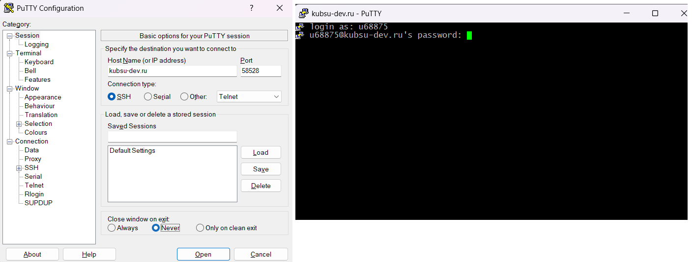
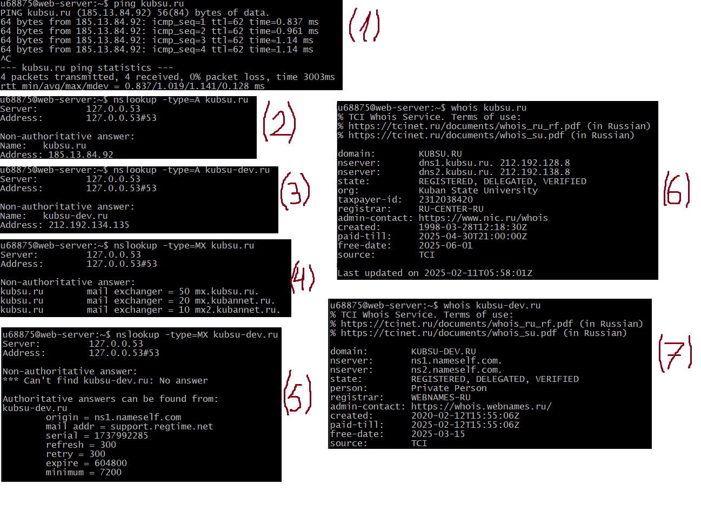
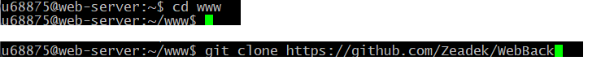
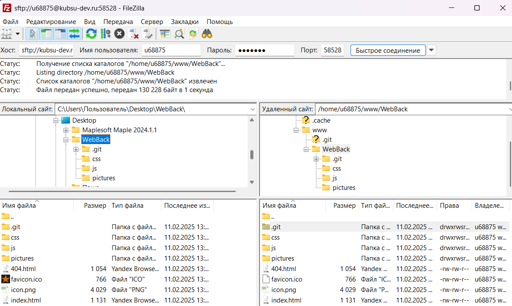

Подключение к учебному серверу по SSH с помощью клиента Putty
Устанавливаем программу PuTTY, вводим адрес сервера(kubsu-dev.ru), порт(58528), логинимся

- ping kubsu.ru
Команда ping позволяет отправить серию небольших пакетов данных на указанное устройство и показать время ответа
Она используется для устранения неполадок подключения.
- nslookup A-записи kubsu.ru
nslookup — это инструмент сетевого администрирования для запроса cистемы доменных имён.
На скриншоте отображен полученный адрес kubsu.ru
- nslookup A-записи kubsu-dev.ru
На скриншоте отображен полученный адрес kubsu-dev.ru
- nslookup MX-записи kubsu.ru
MX-запись (Mail exchange) — это запись, которая отвечает за сервер, через который будет работать почта
На скриншоте отображены полученный адреса почт kubsu.ru
- nslookup MX-записи kubsu-dev.ru
На скриншоте отображено, что у kubsu-dev.ru нет серверов, отвечающих за почту
- whois kubsu.ru
whois — это команда для получения информации о доменах или IP-адресах
На скриншоте отображены полученные дата регистрации домена kubsu.ru, данные владельца, днс-сервера
- whois kubsu-dev.ru
На скриншоте отображены полученные дата регистрации домена kubsu-dev.ru, данные владельца, днс-сервера

Клонирование репозитория
Переходим в директорию cd, туда клонируем репозиторий из github

Скачивание файлов с удаленного сервера при помощи FileZilla
С помощью программы FileZilla соединяемся с
учебным сервером по протоколу SFTP и копируем на
локальный компьютер файлы задания из каталога www
